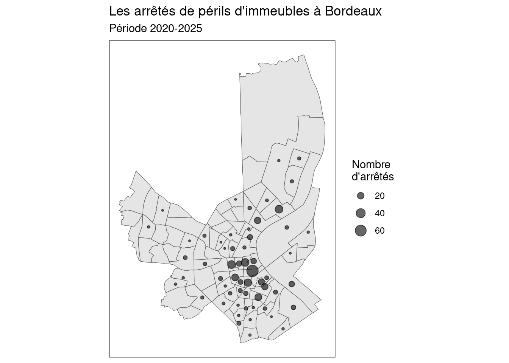

library(readr)
library(dplyr)
perils_geo <- read_csv2("../data/perils_geo.csv")Faire de la géomatique avec R
Chargement du fichier.
Transformation en objet spatial
On charge d’abord les packages nécessaires :
sfpour manipuler des données spatiales,mapviewpour visualiser les points sur une carte interactive.
library(sf)
library(mapview)On transforme ensuite le tableau en un objet spatial (sf) en précisant les colonnes de coordonnées et le système de projection (ici WGS84, EPSG:4326).
perils_geo_sf <- st_as_sf(perils_geo, coords = c("longitude", "latitude")) %>%
st_set_crs(4326)Enfin, on visualise les points sur une carte interactive, colorés selon l’année.
mapview(perils_geo_sf, zcol = "annee", cex = 4)On sauvegarde notre nouvelle couche spatiale.
st_write(perils_geo_sf, "../data/perils_geo.gpkg", append = F)Deleting layer `perils_geo' using driver `GPKG'
Writing layer `perils_geo' to data source
`../data/perils_geo.gpkg' using driver `GPKG'
Writing 495 features with 7 fields and geometry type Point.Opérations spatiales élémentaires
On va ensuite dénombrer les périls par IRIS. Pour cela, nous devons faire une intersection spatiale.
Chargements de données sur les IRIS de Bordeaux.
iris <- st_read("../data/se_iri24_s.shp")Reading layer `se_iri24_s' from data source
`/home/perisa/Documents/ESR/ENSEIGNEMENT/depot_ens/ASA/ASA/data/se_iri24_s.shp'
using driver `ESRI Shapefile'
Simple feature collection with 88 features and 10 fields
Geometry type: POLYGON
Dimension: XY
Bounding box: xmin: -0.6386988 ymin: 44.81074 xmax: -0.5333254 ymax: 44.91669
Geodetic CRS: WGS 84Reprojection de nos deux jeux de données.
iris <- st_transform(iris, 2154)
perils_geo_sf <- st_transform(perils_geo_sf, 2154)Intersection.
int <- st_intersection(perils_geo_sf, iris)Warning: attribute variables are assumed to be spatially constant throughout
all geometriesDébnombrement.
nb_perils_iris <- int %>%
as_tibble() %>%
group_by(nom_iris, ident) %>%
tally()Jointure.
iris <- left_join(iris, nb_perils_iris, by="ident")Points dans les polygones (variante du centroïde).
iris_pt <- st_point_on_surface(iris)Warning: st_point_on_surface assumes attributes are constant over geometriesCarto.
library(ggplot2)
ggplot()+
geom_sf(data = iris)+
geom_sf(data=iris_pt, aes(size=n), alpha=.6)+
scale_size_area()Warning: Removed 30 rows containing missing values or values outside the scale range
(`geom_sf()`).